Let's train an ML model using pen and paper!
Sanyam Asthana, 10th June 2026
But, why?
Understanding Machine Learning can be overwhelming for a beginner, especially when huge walls of math are thrown directly at them. The usual trajectory of learning goes like this: You read about an ML algorithm, you read about the math related to it, and then you start using it in code.
Let's slow down a bit and return to the almighty sword, the pen. You see, a computer is nothing but a highly glorified calculator. It does no magic except calculating faster than you could ever do. So, if a computer can train a model, so can you, albeit a lot slower. But doing so completely fills any gaps you had in the understanding of the procedure, and is highly worth doing in my opinion.
Course of action
We are going to "train" a linear regression model in this article. Don't worry if you are unaware of it. It is arguably the simplest form of ML algorithm, but everything else just builds on top of it, and the basic idea you are going to apply here, is going to be largely the same elsewhere.
If you can, get a pen and a notebook, as it will be rewarding to follow along. Anyways, I am ready with my sheets and my Uni Jetstream (great pen) and here we go!
Linear Regression
If you are already aware of Linear Regression, you can skip ahead.
A linear regression model is simply a line (hence "linear") in a multi-dimensional space, which is as near as many data points as it can get. Speaking formally, the sum of the absolute distance (or squared distance) between the data points and the model "line" is minimum.
Now, it is not hard to visualise that if all the data points of the dataset are collinear (i.e. they lie on the same line), an ideal linear regression model will have zero absolute distance to any data point. However, real data is almost never perfectly linear, and there are often irregularities. Our task is to draw a line in the multi-dimensional graph containing the data points such that it is as close to the points as it can get.
We use Linear Regression when we suspect that the relation between the variable to be predicted has a linear relationship with the variables it is to be predicted from. For example, the distance a car can travel presumably has a linear relationship with the amount of fuel it has. If we have data regarding different occasions of amount of fuel V/S distance travelled, we could use this data to train a linear regression model, one which predicts how much a car can travel, given the amount of fuel.
A general representation of a linear regression model would be:
y = w1x1 + w2x2 + ... + wnxn + b
Here, y is the variable to be predicted. xi are the different variables using which y is to be predicted. wi are the coefficients of each xi, called the weights. Indeed, they define the weightage (contribution) of each xi towards y. At last, b is a constant added to the expression, called the bias, which is independent of any variable. This equation when plotted in an n-dimensional space, gives a line.
When we are training the model, we are essentially changing the values of the weights and the biases (like turning knobs) so that the expression produces a satisfactory value of y for each set of corresponding xi.
Time for paper!
Let us first define a "dataset" which we are going to "train" our model on. Let's define our dataset to have two points, P(1, 2) and Q(2, 4).
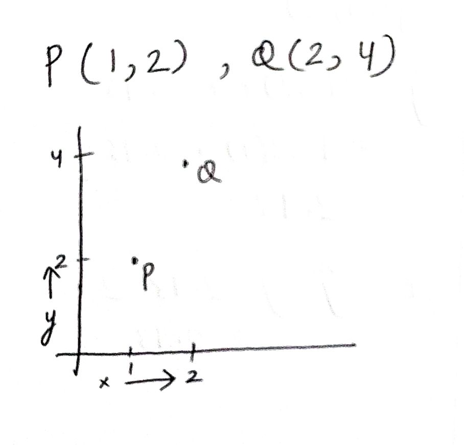
And yes, this article is going to have actual photographs of my sheets, just to demonstrate that all of this can indeed be done on pen and paper.
I have plotted both the points on a graph in the above image. The aim of our model is to make a line which passes, or nearly passes through those two points. Now, the dataset only consists of two points, and any two points are always collinear, so an ideal model should always produce a perfect output, but training a model seldom gives a perfect output even with perfectly linear data.
In our coordinate tuples, the y coordinate is the one the model has to predict, and the x coordinate is the one the model has to use to predict. Since our target variable only depends on one variable (i.e. x), the expression of the model is quite simply:
y = mx + bSo, we just have to tune two parameters, m and b.
So, ideally, we would want our model to predict a value of 2, when 1 is input, and a value of 4, when 2 is input.
Initializing the parameters
To start tuning m and b, we have to assign some values to them initially. Let us set both to be 0.
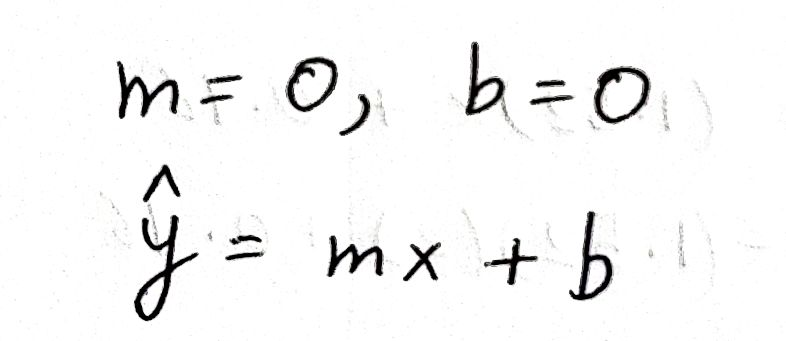
Defining the loss
Before we start training our model, we have to define a method to measure how off our model is from the reality, so that we can improve upon it. This measure of "off-ness" from reality is called the loss. There are several ways of defining loss, but I define loss in this article as:
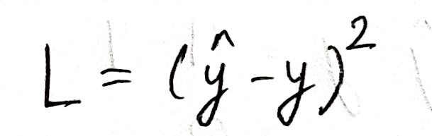
Here, L is the loss, ŷ is the value predicted by our model, and y is the actual value in reality. To train an ML model, our goal is to minimise this loss, as lower values of the loss convey that the difference between the model outputs and the reality is little.
First forward pass
Calculating the model output from the data inputs based on the current state of the model is called a forward pass. Let us process our first point, P through our model and see what output we get:
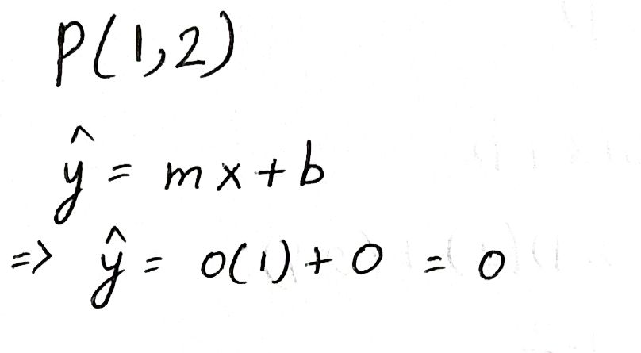
Since we set both of the parameters to 0, our output is 0. We can surely do better than that. It is obvious that we need to change the values of m and b, but how exactly, and by what amount?
Gradient Descent
Gradient Descent is at the heart of machine learning. It is the process by which weights are adjusted to more accurately represent the reality. Despite the complex-sounding name, it really is just a partial derivative of a value with respect to the other, and the updation of the value depending on the partial derivative result.
To train an ML model, we need to minimize the loss. But how exactly are we going to minimize the loss? Let us first see what the loss consists of:
We see that the loss depends on ŷ, which in turn depends on m and b. So, we need to change the values of m and b such that the loss decreases.
To find out if we need to increase or decrease the parameters, we calculate the partial derivative of the loss with respect to both the parameters. The partial derivative tells us how much a quantity changes upon changing a quantity it depends on. In other words, calculating the partial derivatives of the loss with respect to both the parameters will enable us to know how much the loss depends on each of the parameters.
We use the chain rule to calculate the partial derivatives:
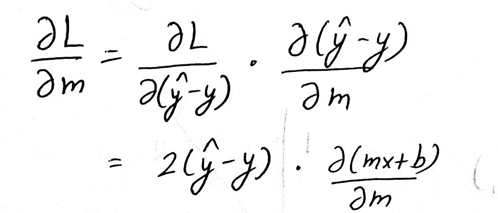
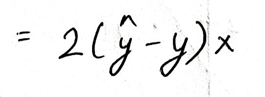
Similarly, for b:
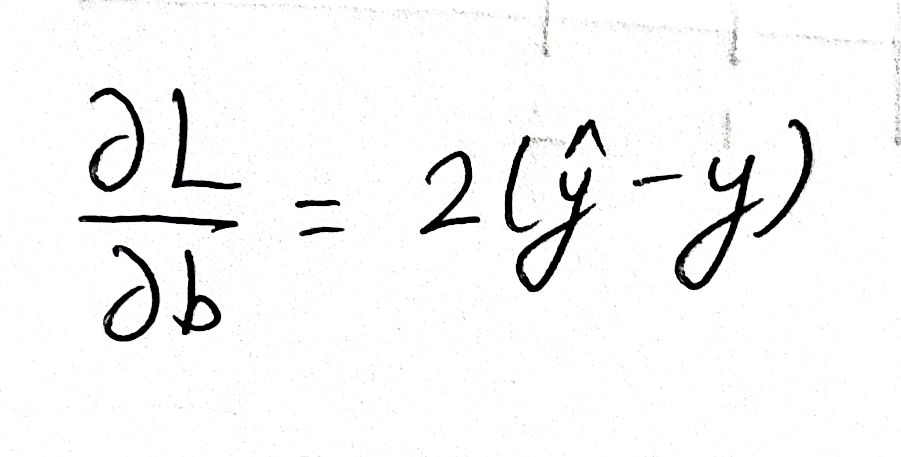
Now that we have expressions to calculate the dependence of L on both the parameters, we can actually go ahead and calculate the gradients. The error e is the difference between our model's output (0) and the reality (2):
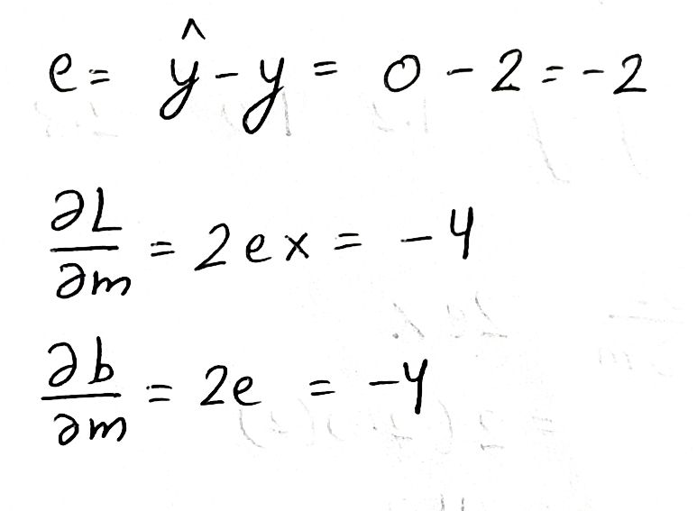
We see that both of the gradients come out to be negative. This means that increasing any of the parameters by a small amount, will decrease the loss by a small amount. So we need to do exactly that! We need to increase the parameters by a bit to bring down the loss. But what do we mean by "a bit"? By how much do we increase the parameters?
We define the learning rate (α). Learning rate is the ratio by which we change the parameters based on the gradients. Let us keep α to be 0.1:
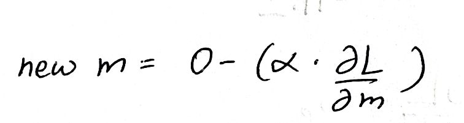
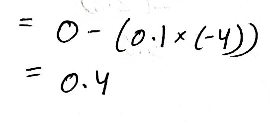
We subtract the product from the old value (0) of m because the gradient tells us what to add to increase the loss, so we do the opposite and subtract to decrease the loss.
The learning rate is the most effective when it is a small value, so we don't change the parameters by a lot such that they overshoot. However, smaller values of the learning rate also increase the time taken to train the model, as the parameters change rather slowly. This is a tradeoff the ML engineers have to make.
We calculate the new value of b in a similar manner:
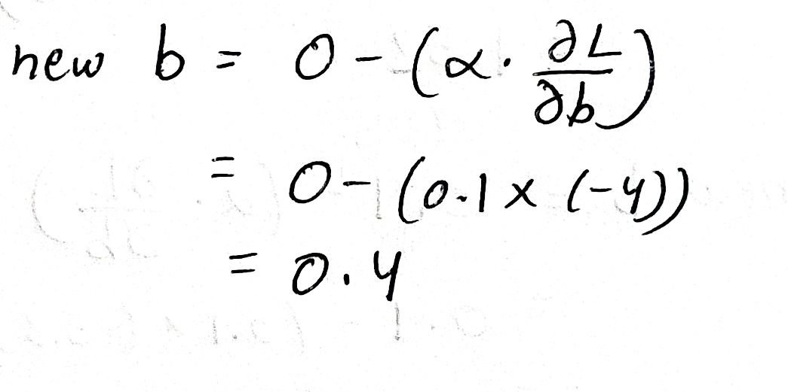
The technique of gradient descent we used here is called Stochastic Gradient Descent, which updates each parameter separately. Another technique is Batch Gradient Descent, which calculates gradients for all points at once and updates the parameters accordingly.
Second forward pass
Till now, we have just processed our first point P. It's time for our second point Q! We do the same steps we did for point P, but this time with our updated parameter values:
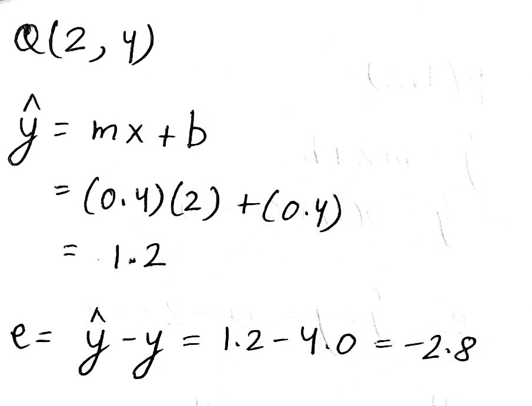
Calculating the gradient:
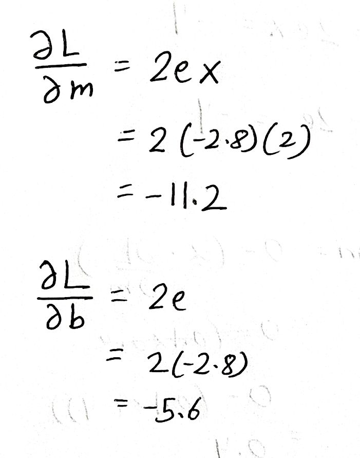
Updating the parameters based on the gradients:
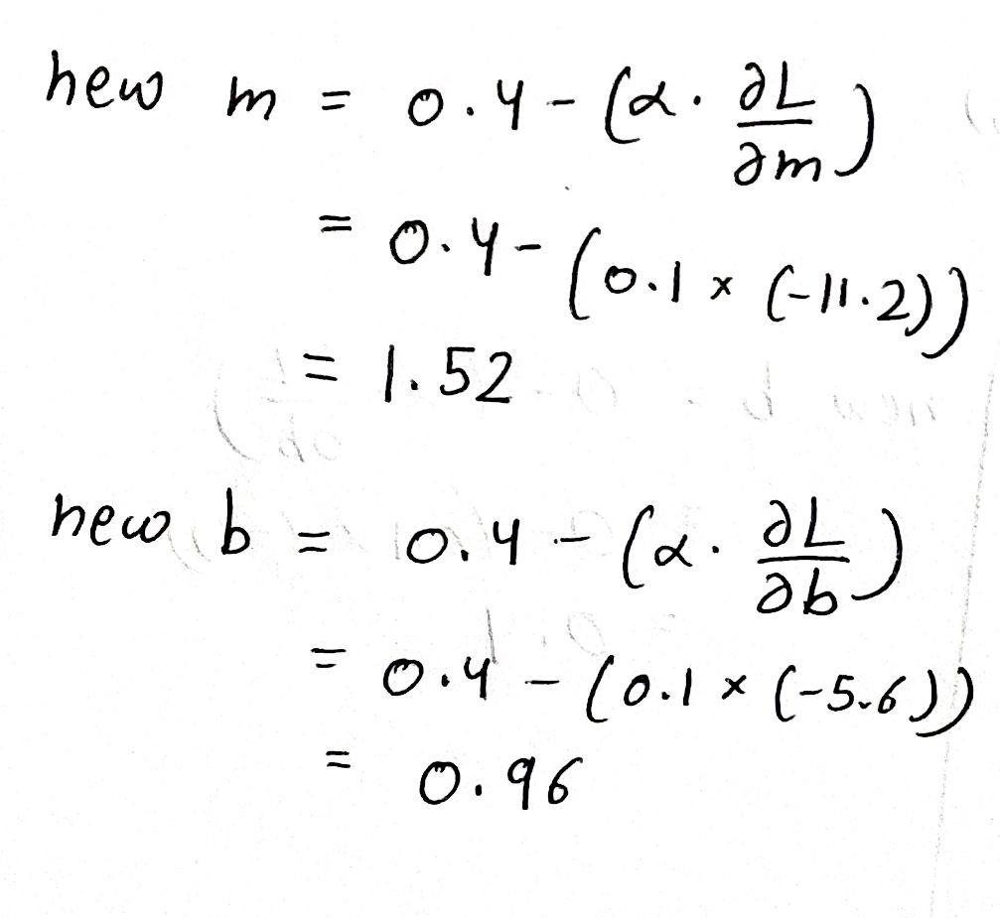
Testing the model
What we have just completed is called an Epoch. An epoch is the process of going through the complete dataset once. Bigger models need much more epochs to train, but to keep things simple, we do away with just one epoch.
We now have our "trained" values of m and b. Let us feed into the model our inputs and see what values we get, starting with point P:
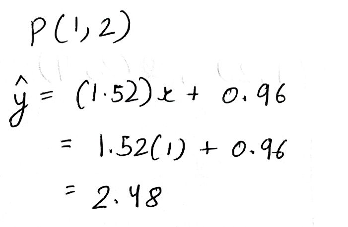
Our initial output for point P was 0, and now it is 2.48, which is much closer to the actual value 2. Our previous error was 0 - 2 = -2, and now it is:
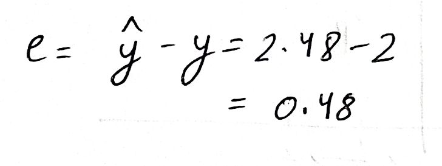
Which is a massive improvement!
Doing similarly for point Q:
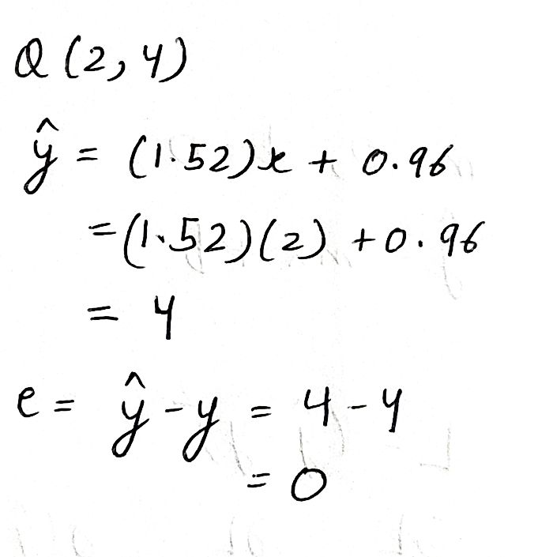
We see that the model has flawlessly predicted the exact value 4, giving an error of 0, as compared to the previous error of -4. Marvelous!
Conclusion
We have successfully "trained" a model on paper! The model can obviously be made more accurate by doing more epochs. The final model "line" on our coordinate system looks something like:
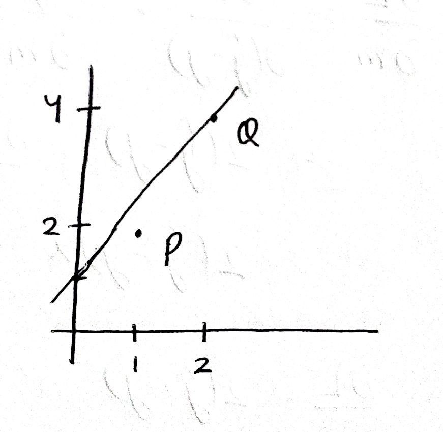
Which is much better as compared to the initial line, which was the x-axis (m = 0, b = 0). Doing more epochs will push this line further towards point P, making it more accurate overall.
If you followed along well, you should be proud of what you just did. I am now putting away my sheets and my Uni Jetstream (still great pen).